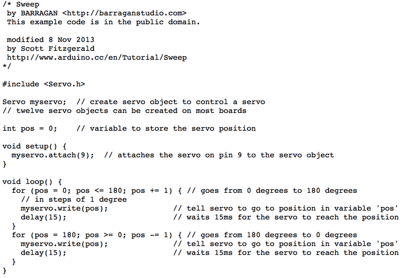
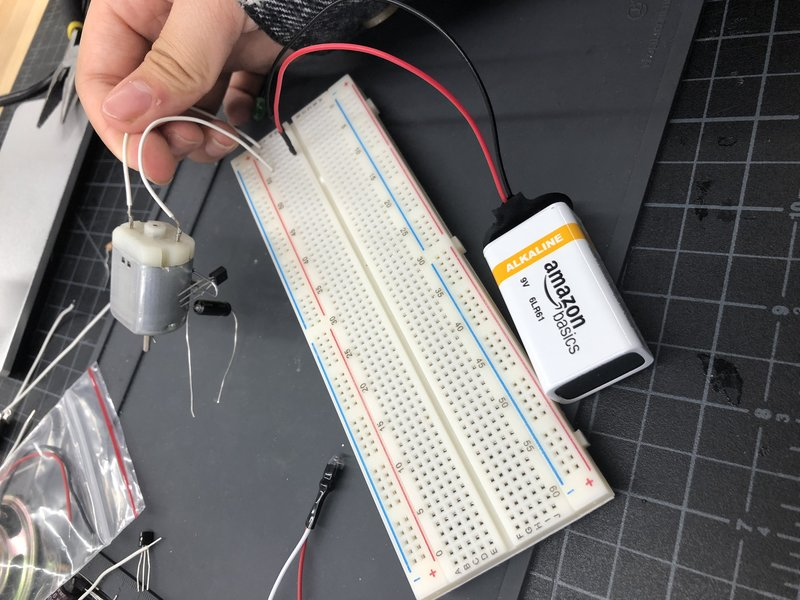
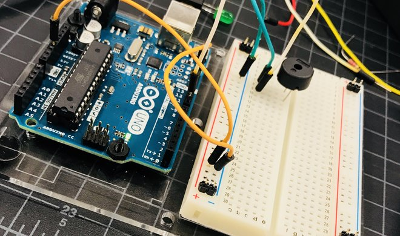

Arduino is an open-source platform used for building electronics projects. Arduino consists of both a physical programmable circuit board and a software(INO)that runs the your computer, used to write and upload computer code to the physical board.
It is relatively easy for beginners like me to operate Arduino because I just have to create an electric circuit on the board and alter the code to create variations on the operation.


The servo motor is my final project. I used the exemple"servo-sweep" on Arduino, but I changed the speed by decresing the "delay".

However, I changed the delay to 8 and the myservo.attach to 9. So the servo spinned faster and I have to plug the wire to pin 9.

